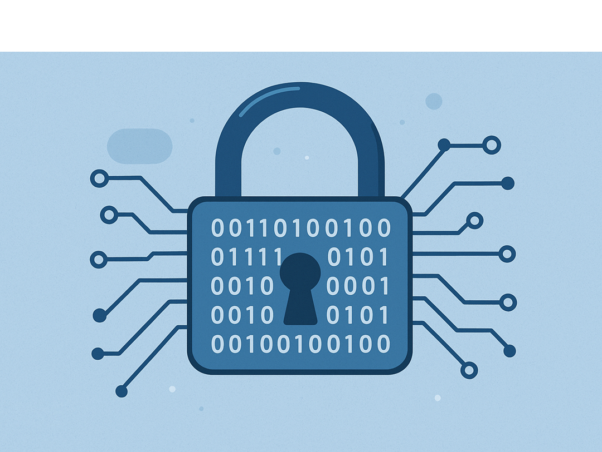

Segurança e Privacidade Online: Como Proteger Seus Dados na Era Digital
Por que Segurança Digital e Privacidade São Cruciais em 2025?
Vivemos na era da transformação digital, onde nossa vida pessoal, profissional e financeira estão intrinsecamente conectadas à internet. Desde o momento em que acordamos e checamos o celular até as compras online que fazemos durante o dia, nossos dados pessoais estão constantemente sendo coletados, processados e armazenados por inúmeras empresas e serviços digitais.
A segurança cibernética deixou de ser uma preocupação exclusiva de especialistas em TI para se tornar uma necessidade fundamental de todo cidadão digital. Segundo dados do CERT.br (Centro de Estudos, Resposta e Tratamento de Incidentes de Segurança no Brasil), os incidentes de segurança digital cresceram exponencialmente nos últimos anos, com milhões de brasileiros sendo vítimas de crimes cibernéticos.
Este guia abrangente apresentará estratégias práticas e ferramentas essenciais para proteger sua privacidade digital, mantendo seus dados pessoais, financeiros e profissionais seguros contra as crescentes ameaças do mundo online.
Principais Ameaças à Segurança Digital: Conheça Seus Inimigos ⚠️
Para se proteger adequadamente, é fundamental compreender as ameaças cibernéticas mais comuns que rondam o ambiente digital. Criminosos cibernéticos estão constantemente evoluindo suas técnicas, tornando-se cada vez mais sofisticados em seus ataques.
1. Phishing e Ataques de Engenharia Social
Phishing é uma das técnicas mais utilizadas por cibercriminosos. Consiste em enviar e-mails, mensagens SMS ou criar sites falsos que imitam perfeitamente empresas confiáveis (bancos, lojas online, redes sociais) com o objetivo de roubar credenciais de acesso, senhas e informações financeiras.
Os ataques de engenharia social exploram a psicologia humana, manipulando emoções como urgência, medo ou curiosidade para levar as vítimas a compartilharem informações confidenciais ou clicarem em links maliciosos.
2. Malwares e Ransomwares
Malwares são softwares maliciosos projetados para danificar, roubar informações ou obter acesso não autorizado a sistemas. Entre os tipos mais perigosos estão:
- Ransomware: Criptografa arquivos do usuário e exige pagamento para liberá-los
- Spyware: Monitora atividades e rouba informações pessoais
- Trojans: Disfarçam-se como software legítimo para obter acesso ao sistema
- Keyloggers: Capturam tudo que é digitado, incluindo senhas e dados bancários
3. Violações de Dados e Vazamentos Corporativos
Grandes empresas e plataformas digitais frequentemente sofrem violações de dados que expõem informações pessoais de milhões de usuários. Casos famosos como os vazamentos do Facebook, LinkedIn e Equifax demonstram que mesmo gigantes da tecnologia não estão imunes a ataques cibernéticos.
4. Redes Wi-Fi Inseguras e Man-in-the-Middle
Redes Wi-Fi públicas representam um risco significativo para a segurança de dados. Criminosos podem criar pontos de acesso falsos ou interceptar comunicações em redes não criptografadas, realizando ataques man-in-the-middle para capturar informações sensíveis.
5. Ataques de Força Bruta e Credential Stuffing
Atacantes utilizam ferramentas automatizadas para testar milhões de combinações de senhas (força bruta) ou reutilizar credenciais vazadas de outros serviços (credential stuffing) para obter acesso não autorizado a contas pessoais.
Estratégias Essenciais para Proteger Seus Dados Online 🛡️
Implementar uma estratégia robusta de segurança digital envolve múltiplas camadas de proteção. Cada medida individual contribui para criar um escudo digital mais resistente contra ameaças cibernéticas.
1. Criação e Gerenciamento de Senhas Seguras
Senhas representam a primeira linha de defesa contra acessos não autorizados. Uma senha forte deve conter pelo menos 12 caracteres, combinando:
- Letras maiúsculas e minúsculas
- Números e símbolos especiais
- Evitar informações pessoais óbvias (datas de nascimento, nomes de familiares)
- Ser única para cada conta ou serviço
Utilize gerenciadores de senhas como LastPass, 1Password ou Bitwarden para gerar, armazenar e sincronizar senhas complexas de forma segura entre todos seus dispositivos.
2. Autenticação Multifator (MFA) e Verificação em Duas Etapas
A autenticação em duas etapas (2FA) adiciona uma camada extra de segurança, exigindo um segundo fator além da senha tradicional. Mesmo que criminosos obtenham suas credenciais, ainda precisarão do código adicional para acessar suas contas.
Métodos de 2FA mais seguros incluem:
- Aplicativos autenticadores: Google Authenticator, Authy, Microsoft Authenticator
- Chaves de segurança físicas: YubiKey, Google Titan
- Códigos por SMS: Menos seguro, mas melhor que apenas senha
- Notificações push: Aprovação através de aplicativo móvel
3. Navegação Segura e Proteção Contra Phishing
Desenvolva hábitos de navegação segura para evitar cair em armadilhas de phishing:
- Verifique sempre a URL completa antes de inserir credenciais
- Procure pelo certificado SSL (ícone de cadeado verde no navegador)
- Desconfie de e-mails com urgência excessiva ou ofertas "imperdíveis"
- Nunca clique em links suspeitos recebidos por e-mail ou SMS
- Digite URLs manualmente em vez de clicar em links
4. Manutenção e Atualização de Sistemas
Manter todos os seus dispositivos e softwares atualizados é crucial para segurança cibernética. Atualizações frequentemente incluem patches de segurança que corrigem vulnerabilidades descobertas recentemente.
Configure atualizações automáticas sempre que possível para:
- Sistemas operacionais (Windows, macOS, Android, iOS)
- Navegadores web e extensões
- Aplicativos e softwares utilizados regularmente
- Firmware de roteadores e dispositivos IoT
5. Backup e Recuperação de Dados
Implemente uma estratégia robusta de backup de dados seguindo a regra 3-2-1:
- 3 cópias dos dados importantes
- 2 tipos de mídia diferentes (HD externo + nuvem)
- 1 cópia externa (geograficamente separada)
Serviços confiáveis de backup em nuvem incluem Google Drive, Dropbox, OneDrive e iCloud, mas sempre com criptografia habilitada.
Ferramentas Essenciais para Segurança e Privacidade Digital 🔧
A escolha das ferramentas certas pode fazer a diferença entre estar protegido ou vulnerável a ataques cibernéticos. Aqui estão as categorias essenciais de software de proteção digital:
1. Soluções Antivírus e Anti-Malware
Um antivírus robusto oferece proteção em tempo real contra diversas ameaças:
- Kaspersky: Excelente detecção de malware e baixo impacto no sistema
- Bitdefender: Proteção avançada com recursos de privacidade
- Norton 360: Suite completa com VPN e monitoramento de identidade
- Malwarebytes: Especializado em detecção de malware avançado
- Windows Defender: Solução gratuita integrada ao Windows
2. Redes Privadas Virtuais (VPN)
Uma VPN confiável criptografa todo seu tráfego de internet e mascara sua localização:
- ExpressVPN: Velocidade superior e servidores globais
- NordVPN: Recursos avançados de segurança e privacidade
- Surfshark: Conexões ilimitadas por conta
- ProtonVPN: Foco em privacidade com versão gratuita limitada
- CyberGhost: Interface amigável para iniciantes
3. Navegadores Focados em Privacidade
Substitua navegadores tradicionais por alternativas que priorizam privacidade digital:
- Brave: Bloqueia anúncios e rastreadores por padrão
- Firefox: Código aberto com recursos de privacidade avançados
- Tor Browser: Anonimato máximo através da rede Tor
- DuckDuckGo Browser: Busca privada sem rastreamento
4. Extensões de Privacidade e Bloqueadores
Complemente seu navegador com extensões que aumentam sua proteção online:
- Privacy Badger: Bloqueia rastreadores automaticamente
- uBlock Origin: Bloqueador de anúncios e conteúdo malicioso
- Ghostery: Detecta e bloqueia scripts de rastreamento
- ClearURLs: Remove parâmetros de rastreamento de URLs
- Decentraleyes: Protege contra rastreamento CDN
5. Comunicação Segura e Criptografada
Para comunicações sensíveis, utilize aplicativos com criptografia end-to-end:
- Signal: Padrão-ouro em messageria privada
- WhatsApp: Criptografia habilitada por padrão
- Telegram: Chats secretos com autodestru[ção
- ProtonMail: E-mail criptografado e privado
- Tutanota: Alternativa de e-mail com foco em privacidade
Segurança e Privacidade na Legislação: LGPD, GDPR e Seus Direitos ⚖️
A proteção de dados pessoais evoluiu de uma preocupação técnica para um direito fundamental garantido por lei. Compreender seus direitos digitais é essencial para exigir transparência e responsabilidade das empresas que coletam seus dados.
Lei Geral de Proteção de Dados (LGPD) no Brasil
A LGPD (Lei nº 13.709/2018) estabelece regras sobre coleta, armazenamento, tratamento e compartilhamento de dados pessoais no Brasil. A lei garante aos cidadãos direitos fundamentais:
- Direito à informação: Saber quais dados são coletados e como são usados
- Direito de acesso: Consultar dados pessoais que empresas possuem sobre você
- Direito de correção: Atualizar dados incompletos, inexatos ou desatualizados
- Direito ao apagamento: Solicitar exclusão de dados desnecessários ou tratados inadequadamente
- Direito à portabilidade: Transferir dados para outro fornecedor de serviço
- Direito de oposição: Recusar tratamento de dados para finalidades específicas
GDPR (General Data Protection Regulation) na Europa
O GDPR é considerado a legislação de proteção de dados mais rigorosa do mundo, servindo como modelo para outras regulamentações globais. Mesmo empresas brasileiras que atendem usuários europeus devem cumprir suas diretrizes.
Principais diferenças e semelhanças com a LGPD:
- Multas: GDPR pode aplicar multas de até 4% do faturamento anual global
- Consentimento: Ambas exigem consentimento explícito e específico
- Privacy by Design: Proteção de dados deve ser considerada desde o desenvolvimento
- DPO (Data Protection Officer): Figura obrigatória em certas organizações
Como Exercer Seus Direitos Digitais
Para exercer seus direitos de privacidade digital:
- Leia as políticas de privacidade antes de aceitar termos de serviço
- Configure adequadamente as configurações de privacidade em redes sociais
- Solicite relatórios de dados pessoais das empresas
- Reporte violações à ANPD (Autoridade Nacional de Proteção de Dados)
- Mantenha-se informado sobre atualizações nas regulamentações
Outras Regulamentações Globais
O movimento global de proteção de dados inclui legislações como:
- CCPA (California): Lei de privacidade da Califórnia
- PIPEDA (Canadá): Lei canadense de proteção de informações pessoais
- PDPA (Singapura): Lei de proteção de dados pessoais de Singapura
Segurança em Dispositivos Móveis: Protegendo Smartphones e Tablets 📱
Com mais de 5 bilhões de usuários de dispositivos móveis globalmente, smartphones e tablets se tornaram alvos prioritários para cibercriminosos. Esses dispositivos armazenam quantidades enormes de informações pessoais, financeiras e profissionais.
Principais Riscos em Dispositivos Móveis
- Aplicativos maliciosos: Apps falsos em lojas não oficiais
- Conexões Wi-Fi inseguras: Interceptação de dados em redes públicas
- Phishing móvel: SMS e mensagens fraudulentas
- Perda ou roubo: Acesso físico não autorizado
- Jailbreak/Root: Remoção de proteções de segurança
Melhores Práticas para Segurança Mobile
- Baixe aplicativos apenas de lojas oficiais (Google Play, App Store)
- Ative bloqueio de tela com PIN, senha, biometria ou padrão
- Configure localização remota e limpeza de dados
- Mantenha o sistema operacional sempre atualizado
- Revise regularmente permissões de aplicativos
- Use aplicativos de segurança móvel confiáveis
Segurança em IoT e Casas Inteligentes: Protegendo Dispositivos Conectados 🏠
A Internet das Coisas (IoT) trouxe conveniência sem precedentes, mas também novos vetores de ataque. Dispositivos como câmeras de segurança, assistentes virtuais, termostatos inteligentes e babás eletrônicas podem ser comprometidos se não forem adequadamente protegidos.
Vulnerabilidades Comuns em Dispositivos IoT
- Senhas padrão nunca alteradas
- Firmware desatualizado sem patches de segurança
- Criptografia fraca ou inexistente
- Falta de autenticação robusta
- Configurações de rede inseguras
Estratégias de Proteção para IoT
- Altere sempre senhas padrão por senhas fortes e únicas
- Mantenha firmware atualizado regularmente
- Crie uma rede separada para dispositivos IoT
- Desabilite recursos desnecessários (microfones, câmeras)
- Configure firewall doméstico adequadamente
- Monitore tráfego de rede para atividades suspeitas
O Futuro da Segurança e Privacidade Digital: Tendências 2025+ 🌐
A evolução tecnológica continua acelerando, trazendo tanto novas oportunidades quanto desafios inéditos para segurança cibernética. Compreender as tendências emergentes é crucial para se preparar para o futuro digital.
Inteligência Artificial na Segurança Cibernética
A IA está revolucionando tanto a defesa quanto o ataque no mundo digital:
- Detecção automatizada: IA identifica padrões de ataques em tempo real
- Resposta adaptativa: Sistemas que aprendem e evoluem contra novas ameaças
- Deepfakes e desinformação: IA também é usada para criar conteúdo fraudulento
- Análise comportamental: Detecção de anomalias baseada em comportamento do usuário
Computação Quântica: Oportunidades e Desafios
A computação quântica representa uma revolução que impactará drasticamente a criptografia atual:
- Quebra de criptografia atual: Algoritmos RSA e ECC podem se tornar vulneráveis
- Criptografia pós-quântica: Desenvolvimento de novos algoritmos resistentes
- Distribuição quântica de chaves: Comunicação teoricamente inquebrável
- Cronograma de implementação: Necessidade de migração gradual
Privacidade Diferencial e Tecnologias Preservadoras de Privacidade
Privacy-Enhancing Technologies (PETs) permitirão análise de dados sem comprometer privacidade individual:
- Computação homomórfica: Processamento de dados criptografados
- Secure Multi-Party Computation: Cálculos colaborativos sem exposição de dados
- Zero-Knowledge Proofs: Validação de informações sem revelá-las
- Federated Learning: Treinamento de IA sem centralização de dados
Identidade Digital Descentralizada
Blockchain e tecnologias descentralizadas prometem revolucionar como gerenciamos identidade digital:
- Self-Sovereign Identity: Controle total sobre identidade digital
- Carteiras digitais de identidade: Armazenamento seguro de credenciais
- Verificação sem intermediários: Autenticação direta peer-to-peer
- Redução de vazamentos: Dados distribuídos em vez de centralizados
Regulamentações Futuras e Compliance Global
O cenário regulatório continuará evoluindo com novas leis de proteção de dados:
- Harmonização global: Padronização de direitos de privacidade
- IA responsável: Regulamentações específicas para inteligência artificial
- Direito ao reparo: Transparência em algoritmos de recomendação
- Soberania digital: Controle nacional sobre dados de cidadãos
Educação Digital e Conscientização: Construindo uma Cultura de Segurança 🎓
A educação digital é fundamental para criar uma sociedade mais segura no ciberespaço. Não basta apenas ter ferramentas de proteção; é essencial desenvolver uma mentalidade de segurança que permeie todas as atividades online.
Segurança Digital para Famílias
Proteger crianças e adolescentes no ambiente digital requer estratégias específicas:
- Controles parentais: Supervisão adequada sem invasão de privacidade
- Educação sobre cyberbullying: Reconhecimento e resposta a assédio online
- Uso responsável de redes sociais: Configurações de privacidade apropriadas
- Tempo de tela saudável: Equilíbrio entre vida digital e offline
- Comunicação aberta: Diálogo sobre experiências e preocupações online
Treinamento Corporativo em Segurança
Empresas devem investir em capacitação de funcionários como primeira linha de defesa:
- Simulações de phishing: Treinamento prático de identificação
- Políticas de segurança claras: Diretrizes específicas e atualizadas
- Incident response training: Procedimentos para reportar incidentes
- Avaliações regulares: Testes de conhecimento e conscientização
Recursos de Aprendizado Contínuo
Mantenha-se atualizado através de fontes confiáveis:
- Blogs especializados: Schneier on Security, Krebs on Security
- Podcasts de segurança: Darknet Diaries, Security Now
- Cursos online: Coursera, edX, Cybrary
- Certificações profissionais: CISSP, CEH, CompTIA Security+
- Conferências e eventos: BSides, DEF CON, RSA Conference
Plano de Resposta a Incidentes: O que Fazer Quando Algo Dá Errado 🚨
Mesmo com todas as precauções, incidentes de segurança podem ocorrer. Ter um plano de resposta estruturado pode minimizar danos e acelerar a recuperação.
Identificação de Comprometimento
Sinais de que sua segurança pode ter sido comprometida:
- Atividade não autorizada em contas bancárias ou cartões
- E-mails ou mensagens enviadas sem seu conhecimento
- Lentidão inexplicável em dispositivos
- Pop-ups ou anúncios excessivos
- Alterações não autorizadas em configurações
- Notificações de login de localizações desconhecidas
Passos Imediatos de Resposta
Quando suspeitar de comprometimento:
- Isole o dispositivo: Desconecte da internet imediatamente
- Documente evidências: Screenshots de atividades suspeitas
- Altere senhas: Comece pelas contas mais críticas
- Notifique instituições: Bancos, empresas de cartão de crédito
- Execute verificação completa: Scan completo com antivírus atualizado
- Monitore contas: Verifique extratos e atividades regularmente
Recuperação e Prevenção
Após conter o incidente:
- Restaure dados limpos: Use backups verificados como seguros
- Reforce segurança: Implemente medidas adicionais de proteção
- Analise causas: Identifique como o incidente ocorreu
- Atualize políticas: Melhore procedimentos de segurança
- Eduque stakeholders: Compartilhe lições aprendidas
Conclusão: Sua Segurança Digital é um Investimento no Futuro 🌟
A segurança e privacidade digitais não são luxos ou preocupações exclusivas de especialistas – são necessidades fundamentais de todo cidadão digital moderno. Em um mundo onde nossa vida pessoal, profissional e financeira estão inexoravelmente conectadas à internet, proteger nossos dados tornou-se tão importante quanto proteger nossa casa ou nossa saúde.
As estratégias apresentadas neste guia – desde a criação de senhas robustas até a compreensão das implicações da computação quântica – formam um ecossistema de proteção que evolui constantemente. A segurança cibernética não é um destino final, mas uma jornada contínua de aprendizado e adaptação.
Lembre-se de que cada medida de segurança implementada fortalece sua postura defensiva geral. Começar com práticas básicas como senhas fortes e autenticação multifator já oferece proteção significativa contra a maioria das ameaças comuns.
À medida que tecnologias emergentes como inteligência artificial, computação quântica e Internet das Coisas continuam transformando nosso mundo digital, nossa abordagem à privacidade e proteção de dados também deve evoluir. Mantenha-se informado, seja proativo e considere a segurança digital como um investimento contínuo em seu futuro digital.
Para aprofundar ainda mais seus conhecimentos sobre tecnologia e segurança, explore nosso artigo complementar sobre Sistemas Operacionais e sua Importância na Segurança Digital, que detalha como diferentes sistemas operacionais abordam a proteção de dados e privacidade do usuário.
Sua segurança digital começa com você. Implemente as práticas apresentadas neste guia, compartilhe conhecimento com familiares e colegas, e contribua para um ciberespaço mais seguro para todos. O futuro digital que construirmos hoje será o legado que deixaremos para as próximas gerações.
Continue Sua Jornada de Segurança Digital 🚀
Gostou deste guia abrangente? Mantenha-se atualizado com as últimas tendências em segurança cibernética e privacidade digital. Inscreva-se em nossa newsletter especializada e receba conteúdo exclusivo sobre proteção digital.